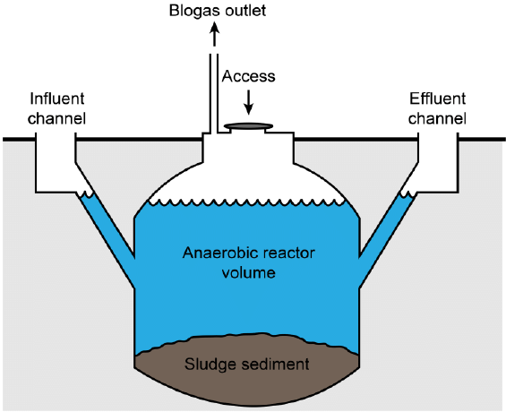
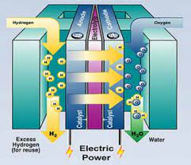
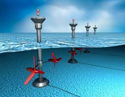

<!DOCTYPE html>
<html lang="en">
  <head>
    <meta charset="utf-8" />
    <meta name="viewport" content="width=device-width, initial-scale=1.0, maximum-scale=1.0, user-scalable=no" />

    <title>Energy Merit Badge</title>
    <link rel="shortcut icon" href="./favicon.ico" />
    <link rel="stylesheet" href="./dist/reset.css" />
    <link rel="stylesheet" href="./dist/reveal.css" />
    <link rel="stylesheet" href="./dist/theme/white.css" id="theme" />
    <link rel="stylesheet" href="./css/highlight/base16/zenburn.css" />

    <link rel="stylesheet" href="./assets/plugins/verticator.css" />
    <link rel="stylesheet" href="./assets/plugins/style.css" />

  </head>
  <body>
    <div class="reveal">
      <div class="slides"><section ><section data-markdown><script type="text/template">

# Energy

Tyler Akins

<table width="30%"><tr><td>


</td></tr></table>
</script></section><section data-markdown><script type="text/template">
## Who am I?

Tyler Akins

Fascinated by science<br />
Nova award counselor, Supernova award mentor

612-387-8102 <br />
fidian@rumkin.com

</td></tr></table>

Email is for adults and for Scouts that have a current Cyber Chip.
<!-- .element style="color: red" -->
</script></section></section><section ><section data-markdown><script type="text/template">
## Expectations
</script></section><section data-markdown><script type="text/template">
<!-- .slide: data-background="on-my-honor-coin.jpg" data-background-size="cover" -->

## Scout-Like Behavior
<!-- .element: style="background-color: rgba(255, 255, 255, 0.5)" -->

Respectful and engaged, otherwise you will be asked to leave.
<!-- .element: style="background-color: rgba(255, 255, 255, 0.5)" -->
</script></section><section data-markdown><script type="text/template">
## My Purpose

I am here to provide information and *help* you complete the requirements.

`-` HOWEVER `-`

You must be the one that completes the work.
</script></section><section data-markdown><script type="text/template">
## Not Prepared?

It's okay. Let me know. I make a note and we will move on.

I'll try to help achieve as many requirements as possible.


</script></section><section data-markdown><script type="text/template">
## Action Verb

Each requirement has action verbs. "Describe," "prepare," "report," "interview," and other actions need to be performed.

Requirements must be met word for word.
</script></section><section data-markdown><script type="text/template">
## Participation Is Expected


<aside class="notes"><p>This also means you should follow along and know what question we are discussing.</p>
</aside></script></section></section><section ><section data-markdown><script type="text/template">
## What is "Energy?"
</script></section><section data-markdown><script type="text/template">
### Definitions

**energy**: power derived from the utilization of physical or chemical resources, especially to provide light and heat or to work machines.

**energy**: the property of matter and radiation which is manifest as a capacity to perform work (such as causing motion or the interaction of molecules).
</script></section><section data-markdown><script type="text/template">
### Examples of Energy

What examples can you provide?

<table><tr><td width="50%">

Atomic / Nuclear

Chemical / Food

Electrical

</td><td width="50%">

Mechanical / Kinetic / Gravitational / Sound

Radiant / Light / Radio

Thermal / Heat

</td></tr>
</script></section><section data-markdown><script type="text/template">
Batteries - chemical energy converted to electricity

Solar panels - light (photons) transmitting through space and air to solar panels (radiant) and converted to electricity

Fire - chemical reaction that produces heat and light

Dropping a book - Gravitational energy causes the book to move down and landing will cause a shockwave plus generate sound
</script></section><section data-markdown><script type="text/template">
<!-- .slide: data-background="forms-of-energy.png" data-background-size="contain" -->
</script></section></section><section ><section data-markdown><script type="text/template">
## Requirement 1a

With your parent’s permission, use the internet to find a blog, podcast, website, or an article on the use or conservation of energy. Discuss with your counselor what details in the article were interesting to you, the questions it raises, and what ideas it addresses that you do not understand.
</script></section><section data-markdown><script type="text/template">
<b>North Dakota threatens to sue Minnesota over a move away from fossil fuels</b><br/>Story by Paul Hodowanic

North Dakota's Governor is threatening to sue the state of Minnesota over its 2040 clean energy bill.
</script></section><section data-markdown><script type="text/template">
Governor Doug Burgum sending a letter to Governor Walz and several other top state leaders including Attorney General Keith Ellison and Ag Commissioner Thom Petersen, urging them to amend the bills currently being considered that would mandate 100% carbon-free energy by 2040.
</script></section><section data-markdown><script type="text/template">
As is, the current legislation being considered would ban any importation of non carbon-free energy, which North Dakota is a top exporter of since that state's oil boom. Falling global prices for oil has hurt the North Dakota economy significantly since 2015.
</script></section><section data-markdown><script type="text/template">
Burgum saying the legislation would illegally regulate commerce in his state and that it needs to be amended to apply only to energy generation within Minnesota.

If the language is not removed, Burgum says they will sue the State of Minnesota.

Source: https://www.msn.com/en-us/news/politics/x/ar-AA16KrOx
</script></section><section data-markdown><script type="text/template">
<video data-autoplay src="./mn-clean-energy-news.mp4"></video>
</script></section></section><section ><section data-markdown><script type="text/template">
## Requirement 2a

Explain how THREE of the following devices use energy, and explain their energy conversions: toaster, greenhouse, lightbulb, bow drill, cell phone, nuclear reactor, sweat lodge.
</script></section><section data-markdown><script type="text/template">
<!-- .slide: data-background="toaster.jpg" data-background-size="contain" -->
</script></section><section data-markdown><script type="text/template">
<!-- .slide: data-background="toaster.jpg" data-background-size="contain" -->

<div style="background-color: rgba(255, 255, 255, 0.7)">

1. Lever is pressed -> potential energy in spring
2. Electricity flows -> heat and light
3. Spring is released -> kinetic energy

</div>
</script></section><section data-markdown><script type="text/template">
<!-- .slide: data-background="greenhouse.jpg" data-background-size="contain" -->
</script></section><section data-markdown><script type="text/template">
<!-- .slide: data-background="greenhouse.jpg" data-background-size="contain" -->

<div style="background-color: rgba(255, 255, 255, 0.7)">

1. Sun shines -> heat (infrared light)
2. Sun shines -> photosynthesis (chemical)
3. Ground heats up -> convection air currents (kinetic)

</div>
</script></section><section data-markdown><script type="text/template">
<!-- .slide: data-background="lightbulb.jpg" data-background-size="contain" -->
</script></section><section data-markdown><script type="text/template">
<!-- .slide: data-background="lightbulb.jpg" data-background-size="contain" -->

<div style="background-color: rgba(255, 255, 255, 0.7)">

Electricity -> heat and light

</div>
</script></section><section data-markdown><script type="text/template">
<!-- .slide: data-background="led.jpg" data-background-size="contain" -->
</script></section><section data-markdown><script type="text/template">
<!-- .slide: data-background="led.jpg" data-background-size="contain" -->

<div style="background-color: rgba(255, 255, 255, 0.7)">

1. Electricity moving to lower orbit -> heat and light
2. Electricity moving along the wire -> heat from the resistance

</div>
</script></section><section data-markdown><script type="text/template">
<!-- .slide: data-background="fluorescent.png" data-background-size="contain" -->
</script></section><section data-markdown><script type="text/template">
<!-- .slide: data-background="fluorescent.png" data-background-size="contain" -->

<div style="background-color: rgba(255, 255, 255, 0.7)">

1. Electricity moving to higher and lower orbits -> heat and light
2. Electricity moving along the wire -> heat from the resistance

</div>
</script></section><section data-markdown><script type="text/template">
<!-- .slide: data-background="light-vs-heat.jpg" data-background-size="contain" -->
</script></section><section data-markdown><script type="text/template">
<!-- .slide: data-background="bow-drill.svg" data-background-size="contain" -->
</script></section><section data-markdown><script type="text/template">
<!-- .slide: data-background="bow-drill.svg" data-background-size="contain" -->

<div style="background-color: rgba(255, 255, 255, 0.8)">

1. You use chemical energy -> kinetic energy
2. Spindle rotates under pressure -> heat energy
3. Heat builds to an ember -> chemical reaction of fire

</div>
</script></section><section data-markdown><script type="text/template">
<!-- .slide: data-background="cell-phone.png" data-background-size="contain" -->
</script></section><section data-markdown><script type="text/template">
<!-- .slide: data-background="cell-phone.png" data-background-size="contain" -->

<div style="background-color: rgba(255, 255, 255, 0.8)">

1. Chemical energy -> electricity
2. Electricity -> radiant (radio transmission)
3. Electricity -> kinetic (sound, vibrate)
4. Electricity -> radiant (light)

</div>
</script></section><section data-markdown><script type="text/template">
<!-- .slide: data-background="nuclear-reactor.png" data-background-size="contain" -->
</script></section><section data-markdown><script type="text/template">
<!-- .slide: data-background="nuclear-reactor.png" data-background-size="contain" -->

<div style="background-color: rgba(255, 255, 255, 0.8)">

1. Nuclear fission -> heat
2. Heat boils water -> chemical
3. Generated gas turns turbine -> kinetic
4. Turbine spins -> electricity

</div>
</script></section><section data-markdown><script type="text/template">
<!-- .slide: data-background="sweat-lodge.jpg" data-background-size="contain" -->
</script></section><section data-markdown><script type="text/template">
<!-- .slide: data-background="sweat-lodge.jpg" data-background-size="contain" -->

<div style="background-color: rgba(255, 255, 255, 0.8)">

1. Fire (chemical reaction) -> heat and light
2. Heat boils water -> chemical

</div>
</script></section></section><section  data-markdown><script type="text/template">
## Requirement 2b

Construct a system that makes at least two energy conversions and explain this to your counselor.
</script></section><section ><section data-markdown><script type="text/template">
## Requirement 3

Show you understand energy efficiency by explaining to your counselor a common example of a situation where energy moves through a system to produce a useful result.
</script></section><section data-markdown><script type="text/template">
a. Identify the parts of the system that are affected by the energy movement.

b. Name the system’s primary source of energy.

c. Identify the useful outcomes of the system.

d. Identify the energy losses of the system.
</script></section><section data-markdown><script type="text/template">
<!-- .slide: data-background="water-cycle.png" data-background-size="contain" -->

<div style="background-color: rgba(255, 255, 255, 0.8)">

Parts + energy source + useful outcomes + losses

</div>
</script></section><section data-markdown><script type="text/template">
<!-- .slide: data-background="photosynthesis.png" data-background-size="contain" -->

<div style="width: 25%; background-color: rgba(255, 255, 255, 0.8)">

Parts,<br>
source,<br>
outcomes,<br>
losses

</div>
</script></section></section><section ><section data-markdown><script type="text/template">
## Requirement 4

Conduct an energy audit of your home. Keep a 14-day log that records what you and your family did to reduce energy use. Include the following in your report and, after the 14-day period, discuss what you have learned with your counselor.
</script></section><section data-markdown><script type="text/template">
a. List the types of energy used in your home such as electricity, wood, oil, liquid petroleum, and natural gas, and tell how each is delivered and measured, and the current cost; OR record the transportation fuel used, miles driven, miles per gallon, and trips using your family car or another vehicle.
</script></section><section data-markdown><script type="text/template">
b. Describe ways you and your family can use energy resources more wisely. In preparing your discussion, consider the energy required for the things you do and use on a daily basis (cooking, showering, using lights, driving, watching TV, using the computer). Explain what is meant by sustainable energy sources. Explain how you can change your energy use through reuse and recycling.
</script></section></section><section ><section data-markdown><script type="text/template">
## Requirement 5

In a notebook, identify and describe five examples of energy waste in your school or community. Suggest in each case possible ways to reduce this waste. Describe the idea of trade-offs in energy use. In your response, do the following:
</script></section><section data-markdown><script type="text/template">
a. Explain how the changes you suggest would lower costs, reduce pollution, or otherwise improve your community.
</script></section><section data-markdown><script type="text/template">
b. Explain what changes to routines, habits, or convenience are necessary to reduce energy waste. Tell why people might resist the changes you suggest.
</script></section><section data-markdown><script type="text/template">
* Identify an example of wasted energy
* Suggest possible ways to reduce the waste
* Explain how this would lower costs, reduce pollution, or other improvements
* What changes need to happen to implement the change
* Why would people be resistant to this change
</script></section></section><section ><section data-markdown><script type="text/template">
## Requirement 6

Prepare pie charts showing the following information, and explain to your counselor the important ideas each chart reveals. Tell where you got your information. Explain how cost affects the use of a nonrenewable energy resource and makes alternatives practical.
</script></section><section data-markdown><script type="text/template">
a. The energy resources that supply the United States with most of its energy

d. The fuels used to generate America’s electricity
</script></section><section data-markdown><script type="text/template">
<!-- .slide: data-background="us-energy-2017.png" data-background-size="contain" -->
</script></section><section data-markdown><script type="text/template">
<!-- .slide: data-background="us-energy-2019.png" data-background-size="contain" -->
</script></section><section data-markdown><script type="text/template">
<!-- .slide: data-background="us-energy-2021.png" data-background-size="contain" -->
</script></section><section data-markdown><script type="text/template">
<!-- .slide: data-background="us-energy-trend.png" data-background-size="contain" -->
</script></section><section data-markdown><script type="text/template">
b. The share of energy resources used by the United States that comes from other countries
</script></section><section data-markdown><script type="text/template">
<!-- .slide: data-background="us-energy-resources.svg" data-background-size="contain" -->
</script></section><section data-markdown><script type="text/template">
c. The proportion of energy resources used by homes, businesses, industry, and transportation
</script></section><section data-markdown><script type="text/template">
<!-- .slide: data-background="us-energy-by-sector.png" data-background-size="contain" -->
</script></section><section data-markdown><script type="text/template">
e. The world’s known and estimated primary energy resource reserves
</script></section><section data-markdown><script type="text/template">
<!-- .slide: data-background="global-energy-resources.jpg" data-background-size="contain" -->
</script></section></section><section ><section data-markdown><script type="text/template">
## Requirement 7

Tell what is being done to make FIVE of the following energy systems produce more usable energy. In your explanation, describe the technology, cost, environmental impacts, and safety concerns.
</script></section><section data-markdown><script type="text/template">
### Biomass digesters or waste-to-energy plants



Waste decomposes and slowly produces methane. Low cost, low impact. Maintenance is difficult because the gas is lethal.
</script></section><section data-markdown><script type="text/template">
### Cogeneration plants

Generate both usable heat and electricity; typically burns natural gas. Moderate cost, and larger facilities are more efficient. Releases greenhouse gases by burning fossil fuels, but getting more out of them by producing two usable outputs. Risk of explosions, fire, electrocution.
</script></section><section data-markdown><script type="text/template">
### Fossil fuel power plants

Generates electricity; typically burns coal. Moderate cost, and larger facilities are more efficient. Releases greenhouse gases by burning fossil fuels. Risk of fire, electrocution.
</script></section><section data-markdown><script type="text/template">
### Fuel cells



Turns hydrogen atoms into water by combining them with oxygen. Captures the electric charge that's created when the atoms are combined. Fairly high cost due to the materials involved. Much lower environmental impact. Hydrogen can explode.
</script></section><section data-markdown><script type="text/template">
### Geothermal power plants

Uses the heat of the planet to produce steam, which rotates a turbine to generate electricity. Initial cost is moderate to high, but it's inexpensive to run. When not managed correctly, ground temperatures can be lowered or polluted water can be pushed into the system. Steam pressure can violently rupture, potential for electrocution and it's worsened by the presence of water.
</script></section><section data-markdown><script type="text/template">
### Nuclear power plants

Heat from splitting atoms is used to boil water and turn a turbine to create electricity. Initial cost is extremely high, though operational cost is low. The waste products are small, but stay radioactive for very long time and need to be stored carefully. Lots of potential danger from radiation and the splitting of atoms, though the technology is safer than coal, petroleum, or natural gas.
</script></section><section data-markdown><script type="text/template">
### Solar power systems

Photons excite atoms in layers of silicon, producing an electrical charge. Cost is moderate and falling rapidly. Production of solar cells can produce toxins and uses a lot of energy, though new technology is reducing the environmental impact. Risk of electrocution.
</script></section><section data-markdown><script type="text/template">
### Tidal energy, wave energy, or ocean thermal energy conversion devices



The motion of the waves turn turbines to generate electricity. Cost is moderate due to the difficulty of construction at sea. Environmental impact is being researched, mostly seems to affect marine life. Risk of electrocution made a bit worse by the presence of water.
</script></section><section data-markdown><script type="text/template">
### Wind turbines

Wind pushes turbines to generate electricity. Cost is moderate. Blades have a very limited lifespan and can't be reused, plus birds can be killed when flying too close to the blades. Risk of electrocution.
</script></section></section><section  data-markdown><script type="text/template">
## Requirement 8

Find out what opportunities are available for a career in energy. Choose one position that interests you and describe the education and training required.
</script></section><section ><section data-markdown><script type="text/template">
### Requirement 1b

After you have completed requirements 2 through 8, revisit your source for requirement 1a. Explain to your counselor what you have learned in completing the requirements that helps you better understand the article.
</script></section><section data-markdown><script type="text/template">
But first, a few questions ...

How clean is the air?
</script></section><section data-markdown><script type="text/template">
<!-- .slide: data-background="cleanest-air-by-state.png" data-background-size="contain" -->
</script></section><section data-markdown><script type="text/template">
What is the CO2 emission per capita?

Compare versus California or Alaska.
</script></section><section data-markdown><script type="text/template">
<!-- .slide: data-background="co2-emission-per-capita.svg" data-background-size="contain" -->
</script></section><section data-markdown><script type="text/template">
What about CO2 emission overall?

How big of an impact can switching to green energy provide?

Check California and Alaska again.
</script></section><section data-markdown><script type="text/template">
<!-- .slide: data-background="co2-emissions-by-state.png" data-background-size="contain" -->
</script></section><section data-markdown><script type="text/template">
How do we compare with the rest of the world?

(Stats are from 2011.)
</script></section><section data-markdown><script type="text/template">
<!-- .slide: data-background="carbon-atlas-2011.png" data-background-size="contain" -->
</script></section><section data-markdown><script type="text/template">
Are there other concerns with the use of green energy?
</script></section><section data-markdown><script type="text/template">
<!-- .slide: data-background="ca-power-prices.png" data-background-size="contain" -->
</script></section><section data-markdown><script type="text/template">
Green energy concern:

Susceptibility to weather events
</script></section><section data-markdown><script type="text/template">
<!-- .slide: data-background="wind-turbine-deicing.webp" data-background-size="contain" -->
</script></section><section data-markdown><script type="text/template">
<!-- .slide: data-background="solar-panels-snow.png" data-background-size="contain" -->
</script></section><section data-markdown><script type="text/template">
Green energy concern:

Inadequate amounts of power generated
</script></section><section data-markdown><script type="text/template">
<!-- .slide: data-background="california-power-outage-statistics.png" data-background-size="contain" -->
</script></section><section data-markdown><script type="text/template">
<!-- .slide: data-background="ca-power-outage-map.jpg" data-background-size="contain" -->
</script></section><section data-markdown><script type="text/template">
How much green energy is California producing?

Why are there rolling blackouts?
</script></section><section data-markdown><script type="text/template">
<!-- .slide: data-background="ca-power-sources-and-blackouts.jpg" data-background-size="contain" -->
</script></section><section data-markdown><script type="text/template">
When you weigh all of the possible impacts, is this change the best we can do?

What actions do you think could be done instead of, or in addition to the proposed bill?
</script></section><section data-markdown><script type="text/template">
<video data-autoplay src="./mn-clean-energy-news.mp4"></video>
</script></section><section data-markdown><script type="text/template">
What points would you bring up in discussion?

If it were up to you, what would be your vote?
</script></section></section><section ><section data-markdown><script type="text/template">
# THE END

### Thank you!

*You survived!* <!-- .element style="font-size: 0.6em" -->
</script></section><section data-markdown><script type="text/template">
Tyler Akins

<table><tr><td>

12650 130th Ave N<br>
Dayton, MN 55327

</td><td>

612-387-8102 <br>
fidian@rumkin.com

</td></tr></table>

Email is for adults and for Scouts that have a current Cyber Chip. <!-- .element style="color: red" -->
</script></section></section></div>
    </div>

    <script src="./dist/reveal.js"></script>

    <script src="./plugin/markdown/markdown.js"></script>
    <script src="./plugin/highlight/highlight.js"></script>
    <script src="./plugin/zoom/zoom.js"></script>
    <script src="./plugin/notes/notes.js"></script>
    <script src="./plugin/math/math.js"></script>
    <script>
      function extend() {
        var target = {};
        for (var i = 0; i < arguments.length; i++) {
          var source = arguments[i];
          for (var key in source) {
            if (source.hasOwnProperty(key)) {
              target[key] = source[key];
            }
          }
        }
        return target;
      }

      // default options to init reveal.js
      var defaultOptions = {
        controls: true,
        progress: true,
        history: true,
        center: true,
        transition: 'default', // none/fade/slide/convex/concave/zoom
        slideNumber: true,
        plugins: [
          RevealMarkdown,
          RevealHighlight,
          RevealZoom,
          RevealNotes,
          RevealMath
        ]
      };

      // options from URL query string
      var queryOptions = Reveal().getQueryHash() || {};

      var options = extend(defaultOptions, {"margin":0.1,"transition":"slide"}, queryOptions);
    </script>

    <script src="./assets/plugins/smallcontrol.js"></script>
    <script src="./assets/plugins/verticator.js"></script>
    <script src="./assets/plugins/plugin-loader.js"></script>

    <script>
      Reveal.initialize(options);
    </script>
  </body>
</html>
